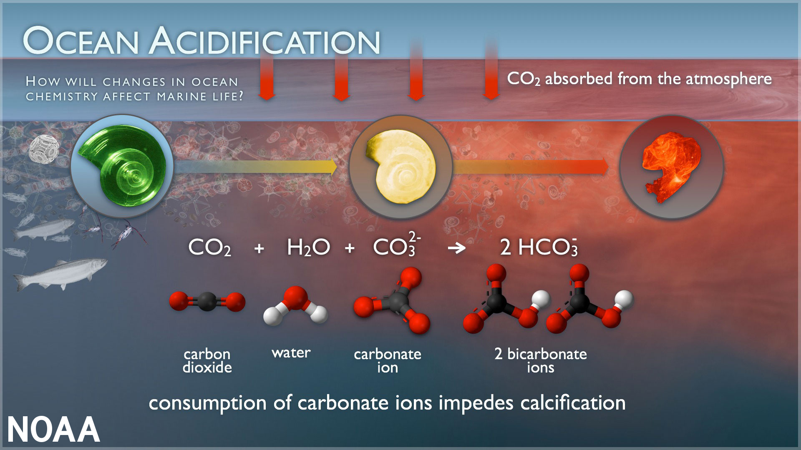

ABOUT
A pteropod shell is shown dissolving over time. Source: Wikimedia
Since the beginning of the Industrial Revolution in the late 1700s, carbon dioxide has been steadily introduced into our atmosphere, making its way into our beautiful oceans. This has therefore caused the chemistry of our oceans to start changing over time. The change has been slow, and at first, it wasn't really noticeable, but now, scientists, fishermen, and other individuals have started noticing peculiar changes in wildlife--like Bivalves, for example. Bivalves are clams, oysters, and other sea creatures that have shells made out of calcium carbonate. They have been seen with weaker shells, a reduction in growth, and a decrease in survival rates as well. If we don't do something about this issue soon, we could see a severe shake in several ecosystems--including our own. This issue, mixed with changing temperatures, pollution, overfishing, and the destruction of oceanic habitats, is causing damages that could take centuries to come back from--if we can even come back from it, that is. That's why we must find a way to reduce our carbon footprint and find other safer, cleaner methods to produce our products, get to work in alternative methods, and spread the word about ocean acidification.